LAPORAN PRAKTIKUM
Praktikum 2: Pengenalan Widgets - Stateless, Stateful, dan Manajemen State Dasar (Flutter)
Pendahuluan
Flutter adalah framework untuk membangun aplikasi mobile yang seluruh tampilannya disusun dari widget. Widget merupakan blok penyusun antarmuka (UI), mulai dari teks, ikon, tombol, hingga tata letak seperti Row dan Column. Kerangka dasar sebuah aplikasi Flutter terdiri dari MaterialApp yang memberikan tema dan pengaturan aplikasi bergaya Material Design, serta Scaffold yang menyediakan struktur halaman seperti AppBar dan body.
Pada praktikum ini, mahasiswa mempelajari perbedaan antara Stateless Widget dan Stateful Widget. StatelessWidget adalah widget statis yang tampilannya tidak berubah setelah dirender, tidak memiliki data internal yang berubah, serta lebih ringan dan cepat. Sebaliknya, StatefulWidget adalah widget dinamis yang menyimpan data internal (state) sehingga tampilannya dapat berubah sebagai respons terhadap interaksi pengguna. Perubahan state dilakukan melalui fungsi setState() yang memberi tahu Flutter agar UI dirender ulang. Sebagai studi kasus dibuat sebuah tampilan dashboard Expense Tracker sederhana yang terdiri dari sapaan pengguna (Stateless) dan kartu saldo yang dapat disensor dengan menekan ikon mata (Stateful).
Tujuan
- Mahasiswa mampu memahami kerangka dasar aplikasi Flutter, yaitu
MaterialAppdanScaffold. - Mahasiswa mampu membedakan penggunaan
StatelessWidgetdanStatefulWidget. - Mahasiswa mampu menerapkan fungsi
setState()untuk membuat UI yang interaktif.
Alat dan Bahan
- Laptop / Komputer
- Flutter SDK
- Code Editor: Visual Studio Code atau Android Studio
- Emulator / Device untuk menjalankan aplikasi
- Project Flutter
- Koneksi Internet
Langkah Praktikum
1. Membuat Widget Sapaan (Stateless)
Langkah ini dimulai dengan membuat header statis berupa class GreetingWidget yang extends StatelessWidget
untuk menampilkan nama pengguna dan ikon avatar. Di dalam method build, tata letak disusun menggunakan Row untuk menyusun elemen dari kiri ke kanan, dipadukan dengan mainAxisAlignment: MainAxisAlignment.spaceBetween agar elemen tersebar ke sisi layar.
Di dalam Row tersebut, Column digunakan untuk menumpuk teks sapaan ("Halo, Budi!" dan "Selamat datang kembali") secara vertikal dengan posisi rata kiri. Sebagai elemen terakhir di dalam Row, ditambahkan CircleAvatar yang berisi Icon(Icons.person).
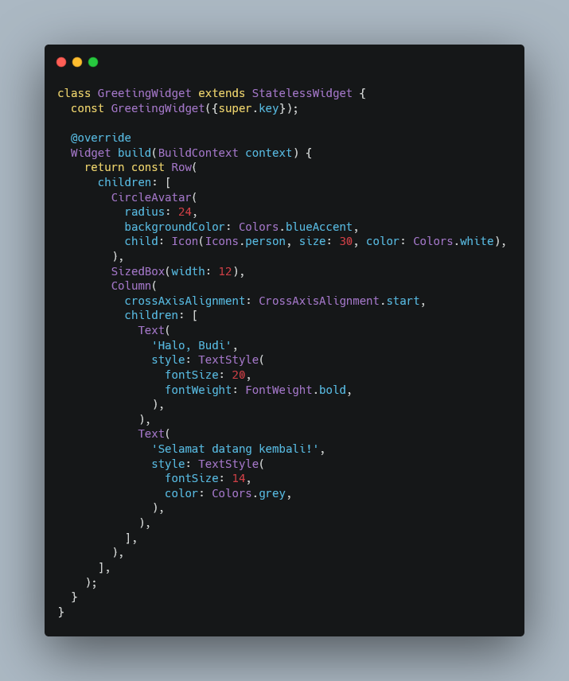
2. Membuat Kartu Saldo (Stateful)
Kartu saldo (Card) ini harus bisa bereaksi saat ikon mata ditekan, sehingga kita wajib menggunakan StatefulWidget. Pembuatannya membutuhkan dua buah class: class BalanceCard yang extends StatefulWidget untuk menginisiasi state, dan class private _BalanceCardState (atau BalanceCardState) yang extends State<BalanceCard>
sebagai tempat menyimpan logika dan tampilan UI
Di dalam class state tersebut, dideklarasikan variabel penanda (seperti _isObscure) untuk menyimpan status sensor teks, dan variabel _balance untuk menyimpan nilai nominal saldo. Terakhir, disiapkan kerangka method build yang implementasi UI-nya akan dilanjutkan pada langkah berikutnya
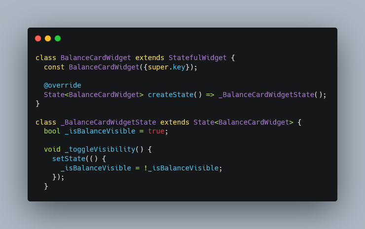
3. Menerapkan Interaktivitas (setState)
Pada langkah ini, UI kartu saldo dibangun di dalam method build menggunakan widget Card dengan latar Colors.blueAccent. Di dalamnya, digunakan Row dengan mainAxisAlignment: MainAxisAlignment.spaceBetween
untuk menyusun teks nominal di kiri dan tombol ikon di kanan. Teks saldo diatur menggunakan logika ternary _isBalanceVisible ? "Rp *********" : _balance untuk menyensor atau menampilkan nominal asli secara dinamis. Interaktivitas diterapkan melalui IconButton
yang ikonnya juga berubah antara visibility_off dan visibility sesuai kondisi. Pada properti onPressed, dijalankan setState(() { _isBalanceVisible = !_isBalanceVisible; }) yang berfungsi untuk membalik nilai boolean sekaligus memberi tahu Flutter agar merender ulang tampilan UI dengan data terbaru.
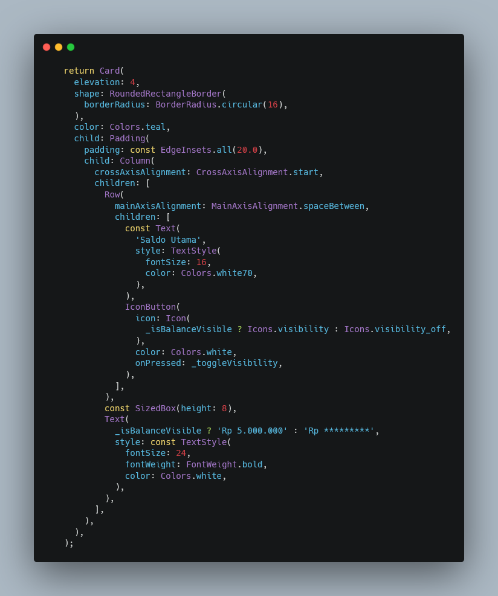
4. Hasil Akhir
Setelah semua langkah dilakukan, aplikasi akan menampilkan tampilan yang sesuai dengan kebutuhan, yaitu widget sapaan dan kartu saldo yang dapat menyembunyikan dan menampilkan nilai saldo berdasarkan interaksi pengguna.

Tugas
Tugas pada praktikum ini ada 2 yaitu:
- Tugas 1: Styling → Ubah warna tema BalanceCard dari biru (Colors.blueAccent) menjadi
hijau emerald (Colors.teal).
-
Tugas 2: Modifikasi UI → Tambahkan teks statis berupa "No. Rekening: 1234-5678" di
bagian bawah nominal saldo di dalam kartu.
A. Styling
Pada line 108 ada code color: Colors.blueAccent yang nantinya diubah menajadi color: Colors.teal
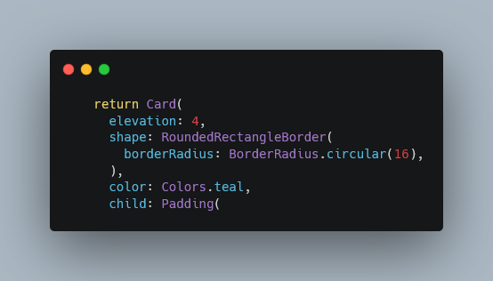
B. Modifikasi UI
Tambahkan widget teks statis berupa "No. Rekening: 1234-5678" di bagian bawah nominal saldo di dalam kartu. Disarankan untuk menambahkan SizedBox sebagai jarak antar teks agar tampilan tetap rapi.
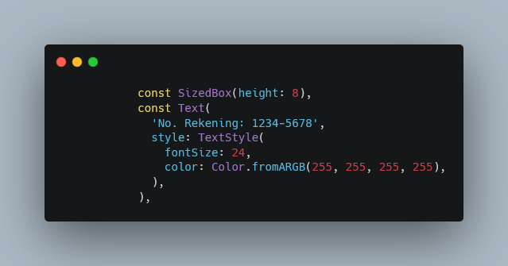
Sebelum vs Sesudah
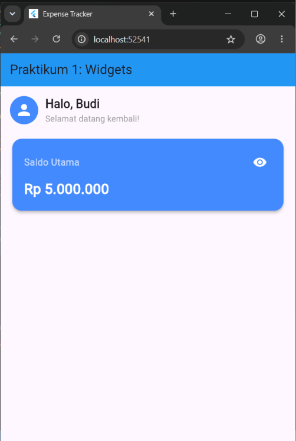
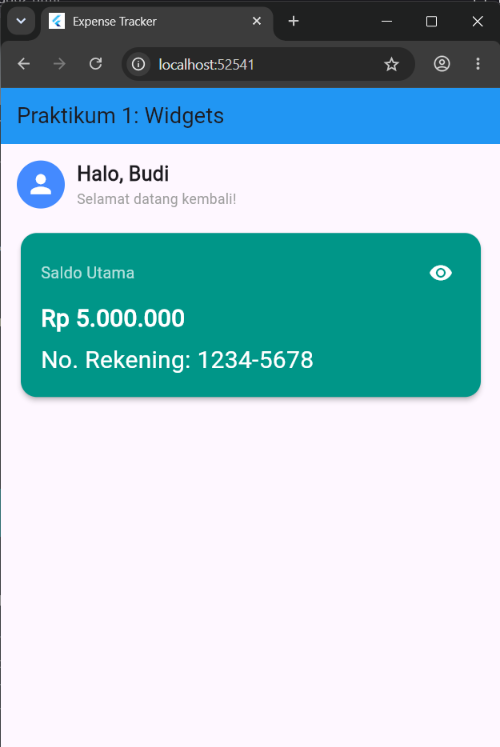
Kesimpulan
Berdasarkan praktikum yang telah dilakukan, dapat disimpulkan bahwa kerangka dasar aplikasi Flutter dibangun dari MaterialApp sebagai pengatur aplikasi dan Scaffold sebagai struktur halaman.
StatelessWidget digunakan untuk tampilan yang bersifat statis dan tidak berubah, seperti sapaan pengguna, sedangkan StatefulWidget digunakan untuk tampilan dinamis yang menyimpan state, seperti kartu saldo yang dapat disensor.
Fungsi setState() berperan penting dalam memberi tahu Flutter bahwa data telah berubah sehingga UI dirender ulang sesuai nilai state terbaru.
Dengan memahami konsep ini, mahasiswa dapat menentukan jenis widget yang tepat serta membangun antarmuka Flutter yang interaktif.
LAPORAN PRAKTIKUM
Praktikum 3: Layouting & Styling Row, Column, Container, dan ListTile (Flutter)
Pendahuluan
Layouting adalah proses menyusun dan mengatur posisi widget di layar agar tampilan aplikasi rapi dan mudah dibaca. Di Flutter, tata letak dibangun dari widget-widget dasar seperti Row yang menyusun widget secara menyamping (kiri ke kanan), Column yang menyusun widget secara menurun (atas ke bawah), serta Container yang berfungsi sebagai kotak dengan margin, padding, warna, dan batas (border). Selain itu, Flutter menyediakan ListTile, yaitu widget bawaan Material Design untuk membuat baris daftar yang rapi secara instan dengan tiga bagian utama: leading (elemen paling kiri seperti ikon atau avatar), title (judul utama baris), dan trailing (elemen paling kanan seperti nominal atau tombol).
Pada praktikum ini, mahasiswa melanjutkan aplikasi Expense Tracker dari Praktikum 1 dengan menambahkan komponen baru, yaitu deretan tombol aksi (Pemasukan, Pengeluaran, Transfer) menggunakan Row dan daftar riwayat transaksi menggunakan Column dan ListTile. Properti mainAxisAlignment dan crossAxisAlignment digunakan untuk mengatur perataan elemen, sedangkan Container dengan BoxDecoration digunakan untuk mengatur warna dan bentuk latar. Seluruh komponen kemudian digabungkan ke dalam satu halaman dashboard yang dibungkus SingleChildScrollView agar layar dapat di-scroll ketika isinya memanjang.
Tujuan
- Mahasiswa mampu menerapkan widget
Rowuntuk membuat deretan tombol aksi. - Mahasiswa mampu menerapkan widget
Columnuntuk membuat daftar transaksi. - Mahasiswa mampu mengatur
padding,margin, dan warna padaContainer.
Alat dan Bahan
- Laptop / Komputer
- Flutter SDK
- Code Editor: Visual Studio Code atau Android Studio
- Emulator / Device untuk menjalankan aplikasi
- Project Flutter
- Koneksi Internet
Langkah Praktikum
1. Menyusun Tombol Aksi (Row)
Langkah ini dimulai dengan membuat class ActionButtonsWidget yang extends StatelessWidget untuk meletakkan tombol Pemasukan, Pengeluaran, dan Transfer sejajar secara horizontal menggunakan Row. Properti mainAxisAlignment: MainAxisAlignment.spaceEvenly berfungsi mengatur jarak antar elemen, di mana ruang kosong dibagi sama rata di antara ketiga tombol. Setiap tombol dibuat dengan memanggil method pembantu _buildActionButton(icon, label, color) agar kode tidak berulang, dengan parameter ikon (Icons.arrow_downward, Icons.arrow_upward, Icons.swap_horiz), teks label, dan warna (hijau, merah, biru).
Di dalam method _buildActionButton, digunakan Column untuk menumpuk ikon dan label secara vertikal. Ikon dibungkus dengan Container yang diberi padding: const EdgeInsets.all(12) untuk ruang di dalam kotak, serta BoxDecoration dengan color: color.withOpacity(0.2) agar latar berwarna transparan dan borderRadius: BorderRadius.circular(12) agar sudutnya membulat. SizedBox(height: 8) memberi jarak antara ikon dan label, sedangkan fontWeight: FontWeight.w500 pada teks membuat label tampil sedikit lebih tebal.
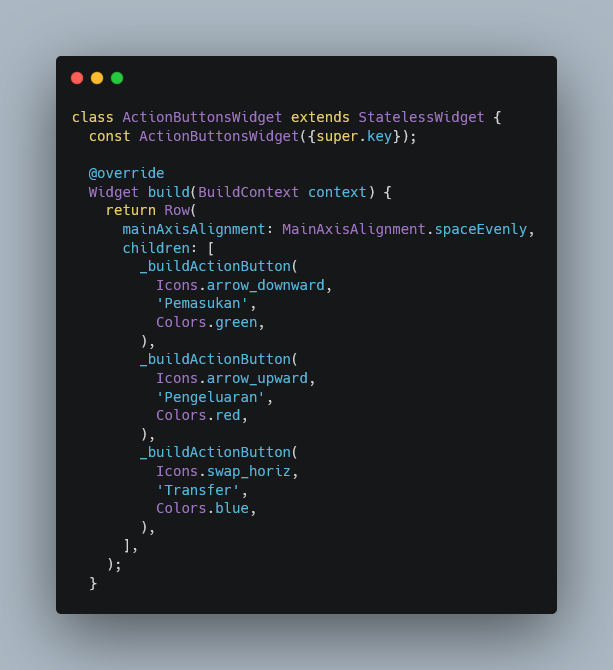
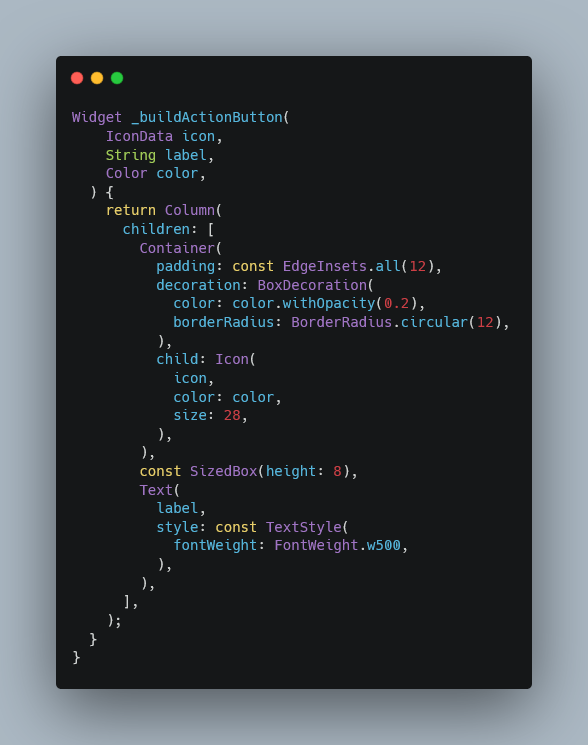
2. Menyusun Riwayat (Column + ListTile)
Daftar transaksi mengurut ke bawah, sehingga dibuat dalam class RecentTransactionsWidget yang menggunakan Column dengan crossAxisAlignment: CrossAxisAlignment.start agar semua isi rata kiri. Di dalamnya terdapat teks judul "Transaksi Terakhir" dengan fontSize: 18 dan FontWeight.bold, diikuti SizedBox(height: 12) sebagai jarak, lalu widget Card dengan elevation: 2 dan sudut membulat (RoundedRectangleBorder) agar daftar transaksi memiliki bayangan dan bingkai.
Di dalam Card, digunakan Column lain yang berisi beberapa ListTile berturut-turut. Setiap ListTile memiliki leading berupa CircleAvatar dengan ikon transaksi, title berupa nama transaksi (misalnya "Makan Siang"), subtitle berupa tanggal transaksi, dan trailing berupa nominal transaksi dengan warna sesuai jenisnya. Widget Divider(height: 1) disisipkan di antara item sebagai garis pemisah.
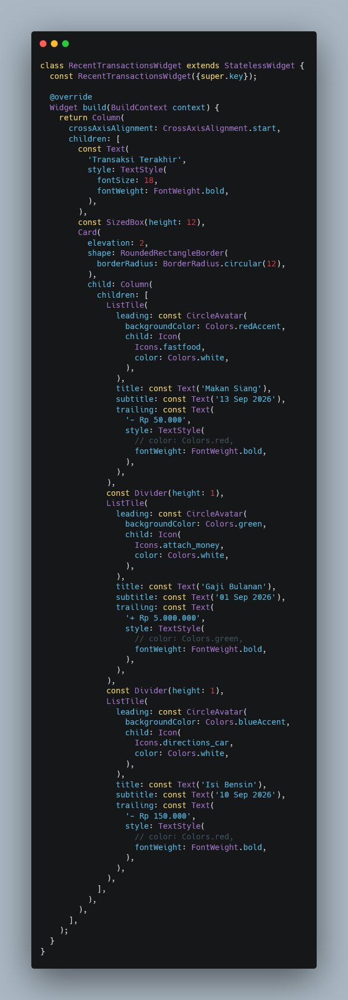
3. Integrasi Dashboard (Scrollable)
Pada langkah ini komponen dari Praktikum 1 (GreetingWidget dan BalanceCardWidget) digabungkan dengan komponen baru (ActionButtonsWidget dan RecentTransactionsWidget) di dalam DashboardScreen. Pada Scaffold, judul AppBar diubah menjadi "Praktikum 2: Layouting". Bagian body dibungkus dengan SingleChildScrollView untuk mengaktifkan scroll vertikal, sehingga layar tidak mengalami overflow ketika daftar transaksi memanjang. Di dalamnya digunakan Padding dengan EdgeInsets.all(16.0) untuk memberi jarak dari tepi layar, kemudian Column yang menyusun keempat widget dari atas ke bawah, dengan SizedBox(height: 20) sebagai jarak vertikal di antara masing-masing widget.
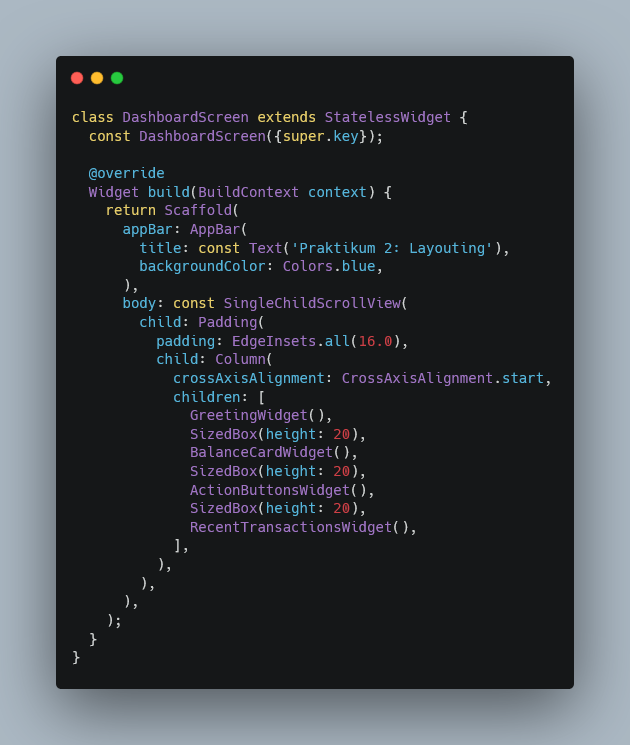
4. Hasil Akhir
Setelah semua langkah dilakukan, simpan file lib/main.dart kemudian jalankan aplikasi dengan perintah flutter run. Aplikasi menampilkan sapaan pengguna, kartu saldo yang dapat disensor dengan menekan ikon mata, tiga tombol aksi (Pemasukan, Pengeluaran, Transfer) yang tersusun sejajar, serta daftar "Transaksi Terakhir" yang berisi tiga transaksi. Halaman dapat di-scroll ke bawah apabila isi melebihi tinggi layar.
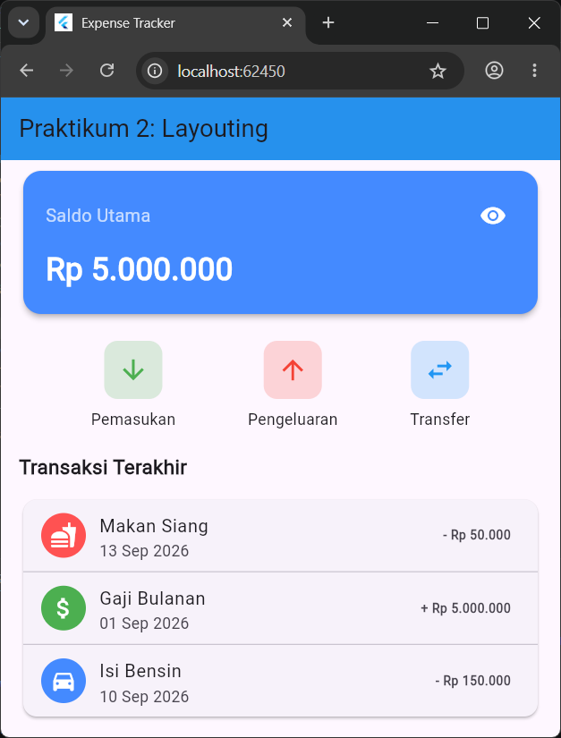
Tugas
Tugas pada praktikum ini ada 2, yaitu:
- Tugas 1: Styling — Pada widget Daftar Transaksi (
ListTile), ubah warnatrailingtext pengeluaran menjadi merah dan text pemasukan menjadi hijau. - Tugas 2: Tambah Data — Tambahkan 2 transaksi fiktif baru ke dalam daftar "Transaksi Terakhir" di bawah kode yang sudah ada.
A. Styling
Pada class RecentTransactionsWidget, properti trailing pada setiap ListTile berisi widget Text yang menampilkan nominal transaksi. Warna teks diatur melalui style: TextStyle(color: ...). Untuk transaksi pengeluaran ("- Rp 50.000" pada Makan Siang dan "- Rp 150.000" pada Isi Bensin) digunakan color: Colors.red, sedangkan untuk transaksi pemasukan ("+ Rp 5.000.000" pada Gaji Bulanan) digunakan color: Colors.green. Properti fontWeight: FontWeight.bold ditambahkan agar nominal tampil tebal dan mudah dibedakan.
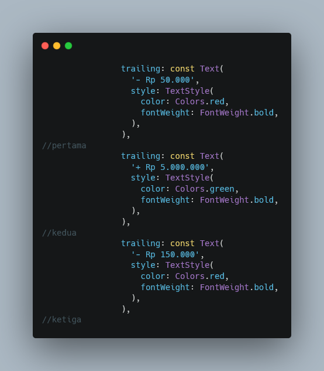
B. Tambah Data
Dua transaksi fiktif baru ditambahkan di bawah item "Isi Bensin", di dalam Column yang berada pada Card. Sebelum setiap item baru disisipkan const Divider(height: 1) sebagai garis pemisah agar tampilan tetap konsisten dengan item sebelumnya. Transaksi pertama adalah "Belanja Bulanan" (pengeluaran) dengan Icons.shopping_cart pada CircleAvatar berlatar Colors.orange, subtitle "15 Sep 2026", dan trailing "- Rp 300.000" berwarna merah. Transaksi kedua adalah "Bonus Proyek" (pemasukan) dengan Icons.card_giftcard pada CircleAvatar berlatar Colors.green, subtitle "17 Sep 2026", dan trailing "+ Rp 750.000" berwarna hijau. Kedua item mengikuti aturan warna pada Tugas 1, yaitu merah untuk pengeluaran dan hijau untuk pemasukan.
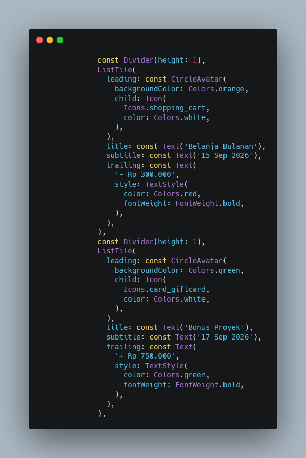
Sebelum vs Sesudah
Sebelum dimodifikasi, daftar "Transaksi Terakhir" hanya berisi 3 transaksi. Setelah dimodifikasi, daftar berisi 5 transaksi dengan 2 transaksi baru pada bagian bawah, dan warna nominal pada seluruh transaksi sudah sesuai jenisnya, yaitu merah untuk pengeluaran dan hijau untuk pemasukan.

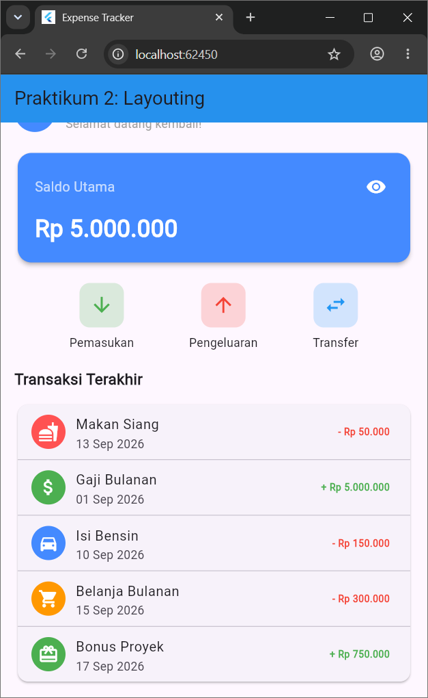
Kesimpulan
Berdasarkan praktikum yang telah dilakukan, dapat disimpulkan bahwa Row digunakan untuk menyusun widget secara horizontal, seperti deretan tombol aksi, sedangkan Column digunakan untuk menyusun widget secara vertikal, seperti daftar transaksi.
Properti mainAxisAlignment dan crossAxisAlignment memudahkan pengaturan jarak dan perataan elemen, sementara Container dengan padding dan BoxDecoration memungkinkan pengaturan ruang, warna, dan bentuk latar.
Widget ListTile mempermudah pembuatan baris daftar yang rapi melalui leading, title, subtitle, dan trailing, dan SingleChildScrollView memastikan halaman tetap dapat diakses ketika isinya melebihi layar.
Dengan memahami konsep layouting dan styling ini, mahasiswa dapat menyusun antarmuka Flutter yang lebih rapi, informatif, dan mudah dibaca.